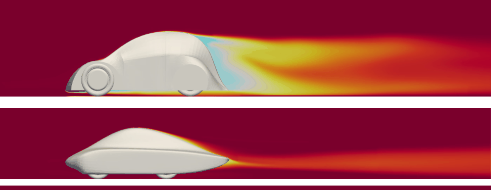
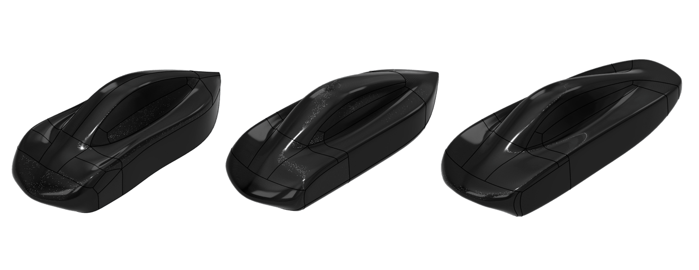

Prometheus Eco Racing / PYRFOROS IV subsystem · NTUA
Aerodynamics & CFD.
A lap simulation said 48% of the energy went to drag before any surface existed, so the exterior was treated as the primary efficiency lever rather than a styling exercise. What follows is where the remaining drag actually sits, what the shape costs as well as what it saves, and what the solver did not tell us.

FIG. 01 — Total pressure coefficient, PYRFOROS III (top) vs. PYRFOROS IV (bottom)
Three weeks, closed loop
The exterior programme ran as a closed loop on a three-week clock, and the loop is the claim — not the number at the end of it. Each candidate went: geometry generated in CAD, checked for kinematic clearance against the steering and suspension envelope, checked for composite manufacturability, then submitted for CFD with results back the same working day. Anything that failed one of the first two checks never reached the solver.
That ordering is deliberate. A shape that is 3% better and cannot be infused without fibre bridging at a concave transition is not 3% better; it is unbuildable, and finding that out after the CFD is how a freeze slips. When the shape froze on Day 21 it had been simultaneously satisfied on aerodynamic performance, steering and suspension packaging, regulatory dimensional limits and manufacturability, with no post-freeze rework.
The record shows seven exterior versions run across that window, and complete solver reports now exist for all of them. Four — marking each step of the service's quality tier, with dates, cell counts, frontal areas and the step where Cd went up while CdAf came down — are tabulated on the PYRFOROS IV case study.


FIG. 03 — Body geometry at iterations V1, V3 and V7
Explore the CFD results
The frozen-geometry run above (15 Dec 2025), explorable interactively: the 209,433-triangle surface mesh — decimated from the 1.67M-triangle AeroCloud export — five selectable colour fields, 350 streamlines and four pressure isosurfaces. Auto-rotating; drag to orbit, scroll to zoom. Colour ramps are labelled low/high only, because the exported fields carry no scale.
Where the drag actually is
At the frozen shape and zero yaw, total drag is 5.68 N. That number is only useful once it is broken apart, and it breaks two ways.
By mechanism: 3.44 N of form and pressure drag against 2.24 N of skin friction — 60.6% to 39.4%. Both contributions informed the development priorities, and the pressure share is the larger of the two. Every junction on this body is tangent- or curvature-continuous for that reason, and the wheel enclosures are grown out of the fuselage surface rather than added as fairings, so the silhouette is unbroken in both side and plan view.
By component: the fuselage shell accounts for 3.386 N and the four wheel enclosures for 2.290 N of a 5.676 N total — 40.35% of all drag from wheels that are already fully concealed. No exposed-wheel variant was solved, so that figure does not measure the enclosure benefit itself; what it does is make the enclosures the priority for further development, and it went on to set track width, wheelbase and the steering geometry, because the enclosure envelope and the steering lock are the same packaging problem.
- Form / pressure — 3.44 N (60.6%)
- Skin friction — 2.24 N (39.4%)
- Fuselage shell — 3.386 N (59.65%)
- Four wheel enclosures — 2.290 N (40.35%)
- Total — 5.676 N
Lift, logged as a cost
The frozen body generates a small net downforce: Fl = −15.76 N, Cl = −0.309. That is about 2.0% of the 80 kg car’s weight, or 1.1% of the 150 kg vehicle-and-driver weight the suspension work uses.
On a car chasing lap time that sentence would be a selling point. Here it is a debit. Normal load is what rolling resistance is proportional to, and rolling resistance and mass are 26% of the lap energy budget — so it adds to the normal-load-dependent part of that allocation, not to the allocation as a whole. It was accepted because it stayed inside that allocation. Its effect on stability is not established by this data: the yaw sweep is a later body and returns positive lift at several angles. But it is recorded as a cost that was accepted, not as a benefit that was engineered, and the two are not the same claim.
The efficiency the whole exercise was for: aerodynamic power demand at the 9.72 m/s (35 km/h) competition cruise fell from roughly 193 W on the previous car to 55.2 W.
What the CFD establishes — and what it does not
All of the above comes from NablaFlow AeroCloud, a managed cloud CFD service. I set up the geometry, the domain conditions and the run quality; the service meshed it and solved it. That division matters for reading the numbers, so here is the whole setup.
The frozen-geometry run is dated 15 December 2025, on AeroCloud platform version v7 — the platform's version, not design iteration V7 — at the service's Pro quality tier, on 29,990,000 cells. Air at ρ = 1.225 kg/m³ and ν = 14.6 cSt, free stream 9.72 m/s, moving ground plane and active wheel rotation both enabled, model envelope 3.357 × 1.283 × 1.051 m and wetted area 15.3952 m². On body length that gives Re = 2.235 × 106.
What the report does not give is the part a reader with a CFD background will want first: no turbulence model, no near-wall treatment, no y+ distribution. It states only that the results are calculated from the time-averaged flow field, and warns of modelling, discretization and iteration error. The report does not specify them — they are absent from what came back, not withheld here. Anyone weighing a Cd of 0.111 on a 0.882 m² frontal area should weigh that alongside it.
Nor is the run history a mesh-independence study. The four tabulated iterations step through the service's quality tiers — Basic at 5.0 M cells, Standard at 16.0 M and 15.9 M, Pro at 29.99 M — which is a cost strategy: cheap runs to explore the shape, one expensive run to settle it. The geometry changed between runs at the same time as the cell count, so neither variable is isolated and the progression cannot be read as convergence. 29.99 M cells is a mesh size, not a justification.
One last piece of bookkeeping. I hold BETA CAE certification in ANSA, EPILYSIS and META, and that toolchain is what ran the monocoque FEA. It is not what ran this. The CFD here is AeroCloud, and the two should not be folded together just because both say “simulation”.